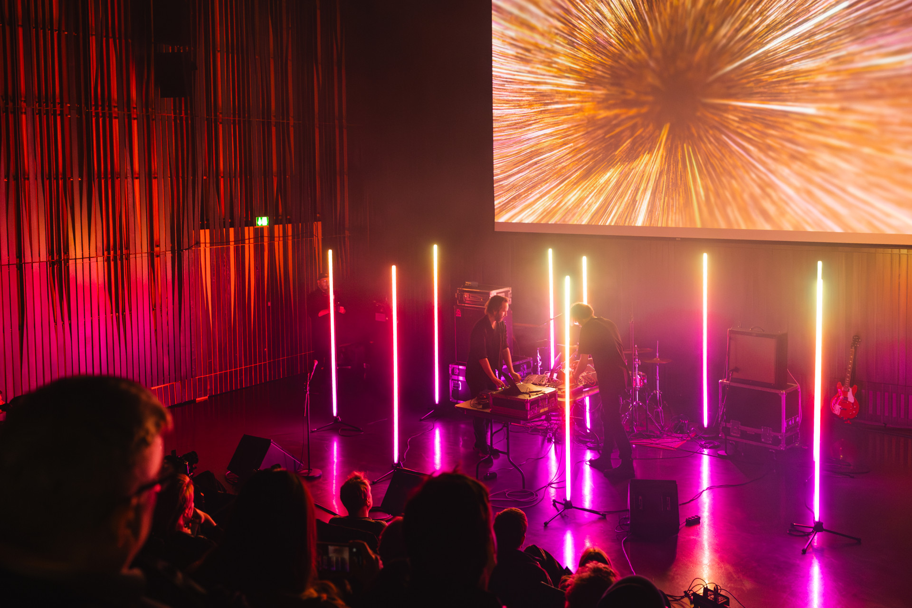

MOTET - Audio-visual project (with Þorsteinn Eyfjörð)
A live audio-visual performance / band, together with sound artist Þorsteinn Eyfjörð Þórarinsson.
Þorsteinn and I started MOTET with the idea of producing audio-visual work in the same way a band produces music, with both elements being influenced by each other, produced and then performed simultaneously.
As a live act, we perform together as live as possible, with everything running real-time and being controlled by actual fingers on controllers as much as humanly possible (although sometimes I run out of fingers).
We also create installation work as a duo. Our first work was entitled Grex Lucis, an audiovisual light and sound installation which debuted at TONIK festival, Faroe Islands.
Performances :
- Extreme Chill Festival, Reykjavík, 2023
- Mengi, Reykjavík, 2024
- Upprásin, Harpa Concert Hall, Reykjavík, 2025
- Iceland Airwaves, Smekkleysa, Reykjavík, 2025
- Reykjavík Art Museum (Hafnarhúsið), Reykjavík, 2026

We make pieces that are at times aggressive and dystopic, but at the same time with a note of hope, and sometimes beautiful, with a note of despair. We're inspired by literature, nature, late-night YouTube rabbitholes, and the artists that have shaped our audio-visual sensibilities over the years.
Our first EP, titled "0.5" was released via our good friends at INNI Music.